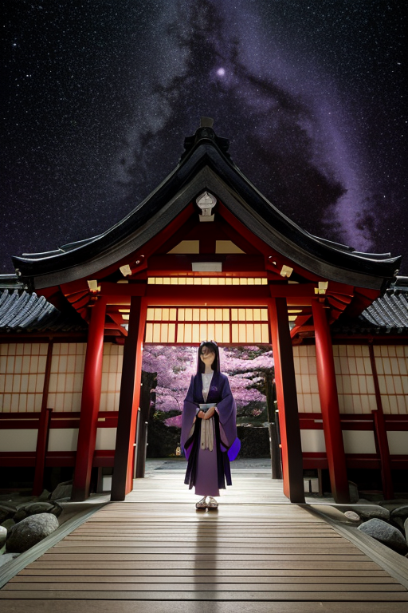
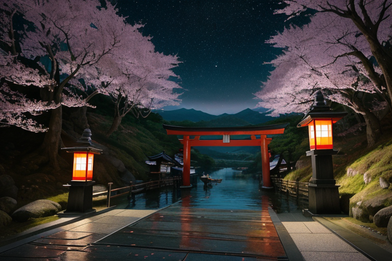
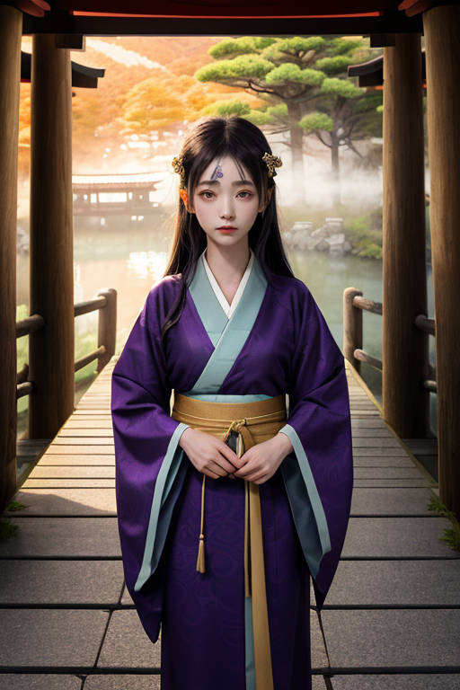
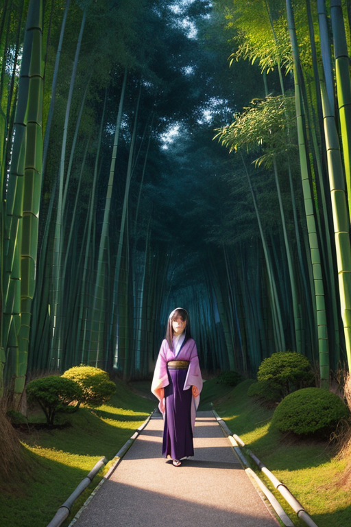

第一章 現実の京都
あなたはまだ気づいていない。この土地にも、王がいることを。
嵐山の竹林は、風の通り道だ。葉擦れの音が幾重にも重なり、まるで別世界への入口のように響く。ここは都の西の端、山陰道へと続く境界。その石畳の道を、一人の女性が静かに歩いていた。京町家の格子戸のような、深い紫の瞳。彼女こそ、封印王キョウトリア・シールである。
彼女の役割は「守る」こと。歪みの列島に生じる地殻のひずみを、都境に張り巡らせた目に見えない結界で受け止め、微調整する。嵐山の揺れを少しだけ和らげ、鴨川の流れを一秒だけ遅らせる。しかし、彼女は知っていた。結界を強固に守れば守るほど、外からの新しい風も、内から外へ出ようとする息吹も、その境界で遮られてしまうことを。
守ることで、何を閉ざすのか。応仁の乱の焼け跡も、明治の遷都の寂寥も、この土地に染み込んだ無数の歴史の波紋を、彼女はすべて結界の中に封じ込めてきた。それは保護であり、同時に一種の囚禁でもあった。

第二章 歪みの兆候
祇園花見小路の石畳に、異質な歪みが走った。観光客の波はかつてなく大きく、彼らの無意識の「ここは特別な場所だ」という期待が、歴史の層を無理に掻き混ぜる。カグラリスが雅の調べで整えようとする波動は、かえって軋みを増した。
シレアが結界を点検する京町家の奥で、古い梁が微かに唸る。歪みは物理的なものではない。外から押し寄せる「現在」という圧力が、丹念に封印されてきた「過去」の静寂を侵食し始めている。明治維新で都が去った時の寂しさに似た、空虚な風の隙間が、結界の内側に生じていた。
キョウトリアは清水寺の舞台に立ち、目を閉じた。掌に浮かぶ紫と金の重円は、確かに都の形を守っている。だが、その輪の内側で、封じられた歴史の情感が、まるで抹茶を点てる時のように、濃く、そして苦く淀み始めているのを感じた。守る結界が、やがて自らを縛る檻となる予感が、静かに胸を締め付けた。

第三章 王の葛藤
伏見稲荷大社の千本鳥居を、キョウトリアはゆっくりと歩く。朱の連なりは、祈りと約束のトンネルだ。彼はここで、歪みを封じる。地震の波が都の地下を伝わる時、その力を千の鳥居に分散させ、揺れを一段階、穏やかにする。シレアとカグラリスが織りなす結界は完璧に近い。都は守られている。
しかし、彼の掌に微かな震えが走る。守る力が、同時に「通す」力を奪っている。歪みを封じるこの結界は、新しい情感の流入も、歴史の自然な変容さえも、わずかながら阻んでいるのではないか。明治の遷都の寂しさを封じ込めたまま、その情感が熟成し、苦味を帯びて淀んでいる。守ることで、都の「呼吸」を閉ざしているのか。
鴨川のせせらぎを聞きながら、彼は考える。結界を緩め、少しの危険と引き換えに、新たな風を通すべきか。それとも、完璧な封印を維持すべきか。彼の胸に、これまでなかった重さがのしかかる。それは、感情らしきものの胎動だった。

第四章 妖精との対話
「王よ、あなたは迷っている」
清水寺の舞台裏、人気の絶えた夕暮れ時。主席妖精シレアが、虚空に浮かぶ結界の紋様を撫でながら静かに口を開いた。
「この都は、『守る』ことと『閉ざす』ことの境界そのものです。応仁の乱の焼け跡を封じ、遷都の喪失感を封じ、無数の別れをこの結界に封じてきました。それは確かに、破壊から都を守り、形を残すためでした」
彼女の指先から、紫と金の微光が滲む。それは伏見稲荷の千本鳥居の路、嵐山の竹林の道、祇園の石畳に張り巡らされた、見えない封印の脈絡だった。
「しかし、封印は時間をも止めるものではありません。封じた情感は、熟成し、時に変質します。完璧な保存は、やがて腐敗を招く。都が『生きている』ことを、私たちは時に忘れがちです」
王は無言で耳を傾ける。シレアの声は、鴨川の水音のように冷たく、またどこか哀愁を帯びていた。
「守ることは、同時に何かを閉ざします。危険を閉ざし、変化を閉ざし、…そして、新たな出会いの可能性さえも。あなたが今感じている重さは、この都が千年にわたり封じ込めてきた、数え切れない『別れ』の情感そのもの。王よ、あなたはもう、ただの調整者ではありません」

第五章 微調整と余韻
嵐山の竹林の小径を、彼はゆっくりと歩いた。風が竹を揺らし、葉擦れの音が重なる。その音の一つ一つに、彼は耳を澄ませる。ここには、都を訪れる無数の人々の期待と、去り際の一抹の寂しさが、微細な「歪み」として蓄積されていた。彼は目を閉じ、手に浮かぶ紫と金の重円結界を微かに輝かせた。結界は音に溶け、訪れる者の足取りをほんの少し軽くし、去る者の背中にほんの少しの余韻を添える。災害を防ぐのではなく、人の心に生じる小さな亀裂を、埋めるわけでも塞ぐわけでもなく、ただ「気づかせない」程度に調整する。
彼は祇園の石畳に立った。夕暮れ時、花見小路をすり抜ける風に、舞妓の衣擦れの残響と、観光客のため息が混ざっている。守ることは、確かに何かを閉ざす。この街は、変化を封じ、古きを守ることで、自らを博物館のようにしてしまった側面がある。彼自身も、感情を封印することで、この街への愛着を直視することを閉ざしてきた。
ふと、鴨川の縁で一人佇む老婦人の背中が目に入った。彼は無意識に、結界の一片を風に乗せた。それは何も変えはしない。ただ、川面に揺れる夕日の影が、ほんの一瞬、長く老婦人の足元に留まっただけだ。
彼は、閉ざすことと、守ることは表裏一体だと知った。そして、その狭間で生まれる静かな哀しみこそが、この都の深みであり、彼が微調整できる唯一の「現実」なのだと。
あなたの町にも、王がいる。